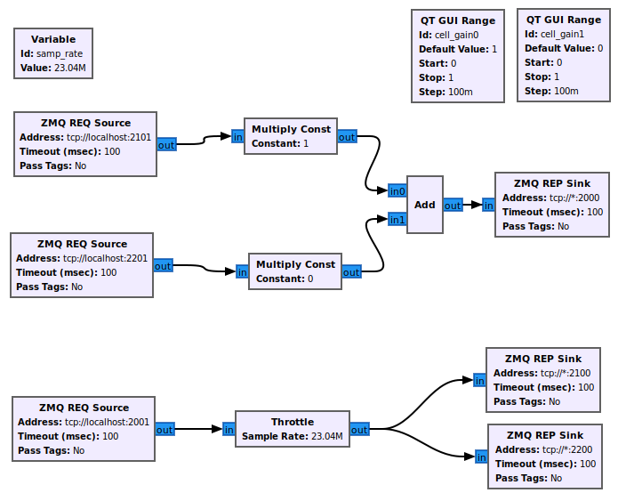

eNB 内和 S1 切换
srsRAN 4G 需要版本 20.10 或更高版本才能运行以下应用程序
简介
本应用笔记重点关注移动性和切换。具体来说，我们展示了如何配置端到端网络以支持用户控制的切换。我们使用 srsRAN 4G 和基于 ZeroMQ 的 RF 仿真来解决 eNB 内和 S1 切换问题，并使用 GNURadio Companion 作为代理来控制小区增益以触发切换。使用 ZMQ 创建 E2E 网络并添加 GRC 功能在我们的 ZMQ应用说明.
所需的硬件和软件
eNB 内切换和 S1 切换都有以下硬件和软件要求：
运行基于 Linux 的操作系统并安装和构建最新版本的 srsRAN 4G 的 PC/笔记本电脑。
ZMQ 已安装并与 srsRAN 4G 一起使用。
GNU-Radio Companion，可以下载 从这个链接.
完全最新的驱动程序和依赖项。
以下命令将确保安装正确的依赖项（仅限 Ubuntu）：
须藤 适合-得到 安装 cmake libfftw3-开发者 libmbedtls-开发者 libboost-节目-选项-开发者 库配置++-开发者 库文件-开发者
有关安装 srsRAN 4G 的完整指南，请参阅 安装指南。的 ZMQ应用笔记 展示如何正确安装和运行 ZMQ。
如果您必须在没有重新构建 srsRAN 4G 的情况下安装或更新驱动程序和/或依赖项，那么您需要这样做以确保 srsRAN 4G 采用新的/更新的驱动程序。
要进行干净的构建，请在终端中执行以下命令：
光盘 ./srsRAN_4G/建造
rm CMake缓存.文本文件
使 干净
cmake ..
使
您的硬件和驱动程序现在应该可以正常工作，并准备好与 srsRAN 4G 正确使用。
eNB 内切换
eNB 内切换是指当 UE 从一个扇区移动到同一 eNB 管理的另一个扇区时，小区之间的切换。以下步骤 展示如何将 ZMQ 和 GRC 与 srsRAN 4G 结合使用来演示此类切换。
下图展示了所使用的整体架构：

这种设置将允许同频内 enb 切换。
请注意，为了简化图表，此处未包含 ZMQ 元素，尽管它们确实构成了此实现的一个关键方面。
srsRAN 4G 设置
为了成功执行 eNB 内切换，必须修改 eNB、无线资源和 UE 的配置文件。
基站：
在 eNB 中，应设置 RF 设备和参数，以便使用 ZMQ，并为每个小区的 UL 和 DL 创建两个 Tx/Rx TCP 端口配对。
以下示例显示了这是如何完成的：
#####################################################################
[射频]
#dl_earfcn = 3350
发送增益 = 80
接收增益 = 40
# I/Q 样本的基于 ZMQ 的 TCP 传输操作示例
设备名称 = 兹米克
设备参数 = 断开连接失败=真实,编号=恩布,tx_端口0=TCP协议://*:2101,发送端口1=TCP协议://*:2201,接收端口0=TCP协议://本地主机:2100,接收端口1=TCP协议://本地主机:2200,编号=恩布,基本速率=23.04e6
#####################################################################
下表应该清楚地说明 TCP 端口是如何在单元之间分配的：
港口方向 |
cell1 端口号 |
cell2 端口号 |
|---|---|---|
接收 |
2100 |
2200 |
发射机 |
2101 |
2201 |
对端口使用清晰的标签系统可以更轻松地实施 GRC 代理。通过让每个 Rx 端口的最低有效单元为 0，Tx 端口为 1，流程图 变得更容易调试。第二个最重要的单元用于指示端口属于哪个单元。
无线电资源 (RR)：
rr.conf 是将小区（扇区）添加到 eNB 的位置，也是启用切换标志的位置。下面显示了添加到现有 rr.conf 的单元的示例：
{
射频端口 = 1;
小区编号 = 0x02;
塔克 = 0x0007;
PCI = 6;
根序列idx = 268;
dl_earfcn = 3350;
活跃状态 = 真实;
// 细胞 可用 为了 交接 (在 其他 基站 -- S1 交接)
测量单元列表 =
(
);
// 选择 测量 报告 配置 (全部 报告 是 合并的 与 全部 测量 物体)
测量报告描述 =
(
{
事件A = 3
a3_偏移量 = 6;
滞后现象 = 0;
触发时间 = 480;
触发量 = “RSRP”;
最大报告单元数 = 1;
报告间隔 = 120;
报告金额 = 1;
}
);
测量定量描述 = {
// 平均 过滤器 系数
rsrq_config = 4;
rsrp_config = 4;
};
}
请注意，小区的 TAC 必须与 MME 的 TAC 匹配，并且两个小区和 UE 之间的 EARFCN 必须相同。具有相同 EARFCN 的每个小区的 PCI 必须不同，这样 PCI%3 因为细胞不相等。同样重要的是要记住 活跃状态 默认单元格以及已添加的单元格中的 flag 必须设置为 true。
UE：
对于 UE 配置，必须将 ZMQ 设置为默认设备，并为 Tx 和 Rx 以及网络命名空间设置适当的 TCP 端口（网络) 设置。除此之外，还必须检查 EARFCN 值以确保它与 rr.conf 中的单元格设置的值相同。以下
示例显示了必须如何修改 ue.conf 文件：
#####################################################################
[射频]
频率偏移 = 0
发送增益 = 80
#rx_增益= 40
#速率= 11.52e6
# I/Q 样本的基于 ZMQ 的 TCP 传输操作示例
设备名称 = 兹米克
设备参数 = 发送端口=TCP协议://*:2001,接收端口=TCP协议://本地主机:2000,编号=厄,基本速率=23.04e6
#####################################################################
[老鼠.尤特拉]
dl_earfcn = 3350
#nof_carriers = 1
#####################################################################
[GW]
网络 = UE1
可以使用默认的 USIM 配置，因为它已存在于 EPC 用于验证 UE 的 user_db.csv 文件中。如果您想使用自定义 USIM 设置，则需要将其添加到 ue.conf 文件中的相关部分 并反映在 user_db.csv 中，以确保 UE 得到正确验证。
港口方向 |
端口号 |
|---|---|
接收 |
2000 |
发射机 |
2001 |
同样，对于这些端口，最低有效单位用于指示端口是用于 Tx 还是 Rx。
简而言之，EARFCN 值在 eNB、小区和 UE 上必须相同，必须在 RR 配置文件中启用切换并进行 ZMQ eNB 和 UE 的默认设备。
完整的配置文件可以在这里下载：
GNU 无线电伴侣
GRC文件可以下载 这里。下载和/或将文件另存为 .grc 文件。需要时与 GNU-Radio Companion 一起运行。
GRC Broker 将用于强制小区之间的切换。这将通过使用变量和滑块手动控制每个单元的增益来完成。 ZMQ REQ Source 和 REP Sink 块将用于将流程图链接到 ZMQ 实例 srsENB 和 srsUE。下图说明了这是如何完成的：

下表再次清楚地显示了如何将端口分配给每个网络元素：
港口方向 |
cell1 端口号 |
cell2 端口号 |
UE 端口# |
|---|---|---|---|
接收 |
2100 |
2200 |
2000 |
发射机 |
2101 |
2201 |
2001 |
cell2 的增益首先设置为 0，cell1 设置为 1。然后通过滑块控制这些增益，并以 0.1 为步长增加，以在建立连接后强制切换。一旦一个小区的增益高于另一个小区，即信号更强时，就应该发生切换。
运行网络
为了正确实例化网络，首先运行 srsEPC，然后运行 srsENB，最后运行 srsUE。一旦这三个都运行，GRC Broker 就应该从 GNU-Radio 运行。然后，UE 应连接到网络，UL 和 DL 通过代理。 您应该已经为 UE 设置了网络命名空间，如 ZMQ应用说明.
EPC：
要启动 EPC，只需运行以下命令：
须藤 SRSEPC
EPC 应显示以下内容：
建成 在 发布 模式 使用 提交 7e60d8aae 上 分行 下一个.
--- 软件 收音机 系统 EPC ---
阅读 配置 文件 /等/srsran_4g/EPC.会议...
高速钢 已初始化.
微机电系统 S11 已初始化
微机电系统 GTP-C 已初始化
微机电系统 已初始化. 中冶集团: 0xf901, 跨国公司: 0xff70
SPGW GTP-U 已初始化.
SPGW S11 已初始化.
SP-GW 已初始化.
基站：
EPC 运行后，eNB 可以使用以下命令运行：
须藤 斯尔森布
然后您应该在控制台中看到以下内容：
--- 软件 收音机 系统 LTE eNodeB ---
阅读 配置 文件 /等/srsran_4g/恩布.会议...
建成 在 发布 模式 使用 提交 7e60d8aae 上 分行 下一个.
开幕 2 渠道 在 RF 装置=兹米克 与 参数=断开连接失败=真实,编号=恩布,tx_端口0=TCP协议://*:2101,发送端口1=TCP协议://*:2201,接收端口0=TCP协议://本地主机:2100,接收端口1=TCP协议://本地主机:2200,编号=恩布,基本速率=23.04e6
CHx 基本速率=23.04e6
CHx 编号=恩布
当前 样品 率 是 1.92 兆赫兹 与 一个 基地 率 的 23.04 兆赫兹 (x12 抽取)
CH0 接收端口=TCP协议://本地主机:2100
CH0 发送端口=TCP协议://*:2101
CH0 断开连接失败=真实
频道1 接收端口=TCP协议://本地主机:2200
频道1 发送端口=TCP协议://*:2201
当前 样品 率 是 11.52 兆赫兹 与 一个 基地 率 的 23.04 兆赫兹 (x2 抽取)
当前 样品 率 是 11.52 兆赫兹 与 一个 基地 率 的 23.04 兆赫兹 (x2 抽取)
设置 频率: DL=2630.0 兆赫兹, UL=2510.0 兆赫兹 为了 cc_idx=0
设置 频率: DL=2630.0 兆赫兹, UL=2510.0 兆赫兹 为了 cc_idx=1
==== eNodeB 开始了 ===
类型 <t> 到 查看 痕迹
然后，EPC 控制台应显示 eNB cas 已连接的确认信息：
已收到 S1 设置 请求.
S1 设置 请求 - 基站 名称: srsenb01, 基站 编号: 0x19b
S1 设置 请求 - 中冶集团:901, 跨国公司:70
S1 设置 请求 - TAC 7, 乙-PLMN 0x9f107
S1 设置 请求 - 寻呼 不连续接收 v128
发送 S1 设置 回应
UE：
现在需要运行 UE，可以使用以下命令来完成：
须藤 斯苏埃
UE 控制台应显示以下内容：
Reading configuration file /etc/srsran_4g/ue.conf...
Built in Release mode using commit 7e60d8aae on branch next.
Opening 1 channels in RF device=zmq with args=tx_port=tcp://*:2001,rx_port=tcp://localhost:2000,id=ue,base_srate=23.04e6
CHx base_srate=23.04e6
CHx id=ue
Current sample rate is 1.92 MHz with a base rate of 23.04 MHz (x12 decimation)
CH0 rx_port=tcp://localhost:2000
CH0 tx_port=tcp://*:2001
Waiting PHY to initialize ... done!
Attaching UE...
Current sample rate is 1.92 MHz with a base rate of 23.04 MHz (x12 decimation)
Current sample rate is 1.92 MHz with a base rate of 23.04 MHz (x12 decimation)
GRC：
一旦所有三个网络元素都成功启动，代理就可以运行。这与任何其他 GRC 流程图的完成方式相同。成功后，弹出窗口 应显示用于控制两个单元增益的交互式滑块。

确认连接
代理运行后，应成功连接，并且网络应正常启动并运行。要确认这一点，请检查控制台中是否显示相应的消息。
EPC 附：
如果连接成功，EPC 应给出以下读数：
初始 UE 留言: LIBLTE_MME_MSG_TYPE_ATTACH_REQUEST
已收到 初始 UE 留言 -- 附加 请求
附加 要求 -- 中号-TMSI: 0xd1006989
附加 要求 -- 基站-UE S1AP 身份证号: 1
附加 要求 -- 附加 类型: 1
附加 请求 -- UE 网络 能力 欧洲经济区: 11110000
附加 请求 -- UE 网络 能力 环境影响评估: 01110000
附加 请求 -- 多发性硬化症 网络 能力 现在: 假的
PDN 连接性 请求 -- 每股收益 承载者 身份 要求的: 0
PDN 连接性 请求 -- 程序 交易 身份证号: 1
PDN 连接性 请求 -- 环境管理署 信息 转乘 要求的: 假的
UL NAS: 已收到 身份 回应
身份证号 回应 -- 国际移动用户识别码: 901700123456789
下行 NAS: 已发送 认证 请求
UL NAS: 已收到 认证 回应
认证 回应 -- 国际移动用户识别码 901700123456789
UE 认证 已接受.
生成 肯尼布 与 UL NAS 计数: 0
下行 NAS: 发送 NAS 安全性 模式 命令.
UL NAS: 已收到 安全性 模式 完成
安全性 模式 命令 完成 -- 国际移动用户识别码: 901700123456789
得到 订阅 信息 -- 质量控制中心 7
发送 创建 会议 请求.
创造 会议 回应 -- 国际移动用户识别码: 901700123456789
创造 会议 回应 -- 微机电系统 控制 TEID: 1
已收到 GTP-C 配电单元. 留言 类型: GTPC_MSG_TYPE_CREATE_SESSION_REQUEST
SPGW: 已分配 控制键 TEID 1
SPGW: 已分配 用户 TEID 1
SPGW: 分配 UE 知识产权 172.16.0.2
已收到 创建 会议 回应
创建 会议 回应 -- SPGW 控制 TEID 1
创建 会议 回应 -- SPGW S1-U 地址: 127.0.1.100
SPGW 已分配 知识产权 172.16.0.2 到 国际移动用户识别码 901700123456789
添加 附加 接受 到 初始 背景 设置 请求
已发送 初始 背景 设置 请求. 乙-RAB 编号 5
已收到 初始 背景 设置 回应
乙-RAB 背景 设置. 乙-RAB 编号 5
乙-RAB 背景 -- 基站 TEID 0x1; 基站 GTP-U 地址 127.0.1.1
UL NAS: 已收到 附加 完成
拆封 附 完成 留言. 国际移动用户识别码 901700123456789
拆封 激活 默认 每股收益 承载者 留言. 每股收益 承载者 编号 5
已收到 GTP-C 配电单元. 留言 类型: GTPC_MSG_TYPE_MODIFY_BEARER_REQUEST
发送 EMM 信息
eNB 附加：
您将在 eNB 上看到 RACH 和连接消息：
RACH: 蒂=341, 抄送=0, 序言=14, 偏移量=0, 临时表=0x46
用户 0x46 已连接
UE 附：
UE 控制台将显示以下内容：
找到了 细胞: 模式=FDD, PCI=1, PRB=50, 港口=1, 首席财务官=-0.2 千赫兹
当前 样品 率 是 11.52 兆赫兹 与 一个 基地 率 的 23.04 兆赫兹 (x2 抽取)
当前 样品 率 是 11.52 兆赫兹 与 一个 基地 率 的 23.04 兆赫兹 (x2 抽取)
找到了 PLMN: 身份证号=90170, TAC=7
随机 访问 传输: 序列=14, 拉-rnti=0x2
随机 访问 完成. c-rnti=0x46, 塔=0
RRC 已连接
网络 附加 成功的. 知识产权: 172.16.0.2
软件 收音机 系统 LTE (srsRAN 4G) 21/10/2020 12:47:43 泰兹:0
网络现在已准备好启动和测试切换。为了防止 UE 进入空闲状态，您应该在 UE 和 eNB 之间发送流量。 这可以通过以下命令来完成：
须藤 ip 网络 执行 UE1 平 172.16.0.1
强制切换
只需使用滑块更改 GRC 内的增益变量即可强制切换。切换成功后，UE 应显示一条消息，确认切换成功。
GRC：
以下步骤概述了如何使用 GRC 强制切换。同样，这是使用增益变量的滑块来完成的：
设置增益 细胞1 至 0.5
慢慢增加增益 细胞2 到 0.5 以上，再到 1。
等待移交被确认。
移动增益 细胞1 至 0。
UE 控制台：
如果切换成功，您应该在 UE 控制台中看到以下读数：
已收到 过氧化氢 命令 到 目标 细胞=6, NCC=0
随机 访问 传输: 序列=3, 拉-rnti=0x2
随机 访问 完成. c-rnti=0x47, 塔=0
过氧化氢 成功的
现在，通过重复上述步骤，可以根据需要多次重复切换。
S1 切换
注意事项
srsEPC 不支持通过 S1 接口进行切换，因为它被设计为轻量级核心 适用于盒装网络类型部署。为了支持S1切换，必须使用第三方EPC。我们将使用 Open5GS 用于本说明的目的，但是可以使用任何支持 S1 切换的第三方 EPC。
当 UE 从一个 eNB 的覆盖范围过渡到下一个 eNB 的覆盖范围时，S1 切换通过 S1 接口进行。 这与 enb 内切换不同，因为 UE 离开 eNB 覆盖范围内的所有扇区的覆盖范围， 这是到新 eNB 的切换。 以下步骤概述了如何使用 srsUE、srsENB 和第三方开源核心来演示这一点。 在这种情况下，使用 Open5GS 中的 EPC。其他第三方选项也适用于这种情况，只要它们支持 S1 切换。
下图概述了网络架构：

Open5GS EPC
Open5GS EPC 是一种开源核心网络解决方案，可与 srsRA 4G 互操作。软件可以安装 如果使用 Ubuntu，则来自软件包，如通过 open5GS 文档。 EPC 和其余 Open5GS 应用程序开箱即用，只需少量配置即可与 srsRAN 4G 一起使用。
EPC 设置
EPC 需要配置为与 srsRAN 4G 一起使用。唯一需要的更改是 MME 配置并将 UE 添加到用户数据库。
MME配置：
在mme.yaml文件中，TAC必须更改为7，这是srsRAN 4G的标准配置。你也可以离开 这些设置保持原样，并配置 srsRAN 4G 元素。
下面显示了使用的MME配置：
嗯:
自由直径: /等/自由直径/嗯.会议
s1ap:
- 地址: 127.0.0.2
GTPC:
- 地址: 127.0.0.2
古美:
plmn_id:
MCC: 901
跨国公司: 70
mme_gid: 2
mme_code: 1
泰:
plmn_id:
MCC: 901
跨国公司: 70
塔克: 7
安全:
完整性顺序 : [ 环评2, 环评1, 环境影响评估0 ]
加密顺序 : [ 欧洲经济区0, 欧洲经济区1, 欧洲经济区2 ]
网络名称:
满: Open5GS
mme_name: 开放5G-米梅0
作为参考，可以从第 204 行到第 226 行找到此配置。
订户名单：
将订阅者添加到网络是通过 open5GS 提供的 Web UI 完成的。他们的文档概述 这是如何完成的 这里，在该部分下 注册订户信息.
首先打开UI，找到 http://localhost:3000，然后输入 UE 配置文件 (ue.conf) 中找到的凭据。使用以下凭据：

请注意，IMSI 中的前五位数字 (PLMN) 为 90170，并且正在使用 OPc（里程验证）。 这与 ue.conf 中的 USIM 配置不同，此处所做的更改稍后将反映在 ue.conf 文件中。 IMSI 经过编辑以反映 用于 MCC 和 MNC 的值。此处使用里程来展示如何更改 sim 凭证以适应某些用例。
srsRAN 4G 设置
为了确保 srsRAN 4G 正确配置以实现 S1 切换，必须对 UE 和 eNB 配置进行更改。
UE：
如前所述，必须修改配置文件中的 USIM 凭据。以下部分取自配置文件，显示了需要修改的部分：
#####################################################################
[射频]
频率偏移 = 0
发送增益 = 80
#rx_增益= 40
#速率= 11.52e6
# I/Q 样本的基于 ZMQ 的 TCP 传输操作示例
设备名称 = 兹米克
设备参数 = 发送端口=TCP协议://*:2001,接收端口=TCP协议://本地主机:2000,编号=厄,基本速率=23.04e6
#####################################################################
[老鼠.尤特拉]
dl_earfcn = 3350
#nof_carriers = 1
#####################################################################
[GW]
网络 = UE1
#####################################################################
[乌西姆]
模式 = 软的
算法 = 里程
OPC = 63BFA50EE6523365FF14C1F45F88737D
k = 00112233445566778899aabbccddeeff
伊姆西 = 901700123456789
串号 = 353490069873319
#读者=
#pin = 1234
对于此应用程序，下行链路 EARFCN 设置为 3350，这与网络的其余部分相匹配。这将为 UE 和 eNB 设置 LTE 频段和载波频率，它们必须匹配才能成功建立和保持连接。 这里还显示了将 UE 添加到 EPC 中的订户列表时所做的更改，IMSI 现在以正确的 PLMN 代码开头，并且身份验证算法设置为里程； opc 未注释以启用此功能。
基站：
对于 eNB 配置，必须更改 PLMN，MME 地址也必须更改为与 Open5GS EPC 关联的 MME 的地址。以下是对 enb.conf 文件所做的更改：
[恩布]
enb_id = 0x19B
MCC = 901
跨国公司 = 70
内存地址 = 127.0.0.2
gtp_bind_地址 = 127.0.1.1
s1c_bind_addr = 127.0.1.1
n_prb = 50
#tm = 4
#nof_端口 = 2
eNB RR：
还必须编辑 rr.conf 文件以允许 S1 切换。为此，创建两个新的 rr.conf 文件， 命名为 rr1.conf 和 rr2.conf。由于将有两个 eNB，因此每个 eNB 都有一个关联的 rr.conf。建议 现有的 rr.conf 被简单地复制到两个新文件中，并且只有 单元格列表 每个新填充物都会发生变化。这应该有助于避免错误配置。
rr1.conf：
将 rr.conf 复制到新文件（与现有配置文件位于同一位置）后，必须编辑单元列表。下面的代码片段展示了这一点：
单元格列表 =
(
{
// 射频端口 = 0;
小区编号 = 0x01;
塔克 = 0x0007;
PCI = 1;
根序列idx = 204;
dl_earfcn = 3350;
//ul_earfcn = 21400;
活跃状态 = 真实;
//测量间隙周期 = 0; // 0 (不活跃的), 40 或 80
//测量间隙偏移子帧 = [6, 12, 18, 24, 30];
// 目标推力sinr = -1;
// 目标pucch_sinr = -1;
// 启用_phr_处理 = 假的;
// 最小短语阈值 = 0;
// 允许测量带宽 = 6;
// t304 = 2000; // 在 毫秒. 可能 价值观: 50, 100, 150, 200, 500, 1000, 2000
// CA 细胞
scell_list = (
// {小区编号 = 0x02; 跨运营商调度 = 假的; 调度_小区_id = 0x02; ul_允许 = 真实}
)
// 细胞 可用 为了 交接
测量单元列表 =
(
{
埃西 = 0x19B01;
dl_earfcn = 3350;
PCI = 1;
//可用的直接转发路径 = 假的;
//允许测量带宽 = 6;
//单元格个体偏移量 = 0;
},
{
埃西 = 0x19C01;
dl_earfcn = 3350;
PCI = 6;
}
);
// 选择 测量 报告 配置 (全部 报告 是 合并的 与 全部 测量 物体)
测量报告描述 =
(
{
事件A = 3
a3_偏移量 = 6;
滞后现象 = 0;
触发时间 = 480;
触发量 = “RSRP”;
最大报告单元数 = 1;
报告间隔 = 120;
报告金额 = 1;
}
);
测量定量描述 = {
// 平均 过滤器 系数
rsrq_config = 4;
rsrp_config = 4;
};
}
// 添加 这里 更多 细胞
);
这里 TAC 设置为 7，DL EARFCN 设置为 3350。为了确保 S1 切换成功，小区 与第二个 eNB 关联的必须添加到 测量单元列表。这可以在这里看到，其中一个单元格 eci = 0x19C01 包含在内，这是单元格 与第二eNB相关联。细胞与 eci = 0x19B01 是当前 eNB 上活动的小区。两者的 DL EARFCN 是相同的。
rr2.conf：
与 rr1.conf 类似，必须在其中找到其他配置文件并在其中创建文件 rr2.conf 单元格列表 更新：
单元格列表 =
(
{
// 射频端口 = 0;
小区编号 = 0x01;
塔克 = 0x0007;
PCI = 6;
根序列idx = 264;
dl_earfcn = 3350;
//ul_earfcn = 21400;
活跃状态 = 真实;
//测量间隙周期 = 0; // 0 (不活跃的), 40 或 80
//测量间隙偏移子帧 = [6, 12, 18, 24, 30];
// 目标推力sinr = -1;
// 目标pucch_sinr = -1;
// 启用_phr_处理 = 假的;
// 最小短语阈值 = 0;
// 允许测量带宽 = 6;
// t304 = 2000; // 在 毫秒. 可能 价值观: 50, 100, 150, 200, 500, 1000, 2000
// CA 细胞
scell_list = (
// {小区编号 = 0x02; 跨运营商调度 = 假的; 调度_小区_id = 0x02; ul_允许 = 真实}
)
// 细胞 可用 为了 交接
测量单元列表 =
(
{
埃西 = 0x19B01;
dl_earfcn = 3350;
PCI = 1;
//可用的直接转发路径 = 假的;
//允许测量带宽 = 6;
//单元格个体偏移量 = 0;
},
{
埃西 = 0x19C01;
dl_earfcn = 3350;
PCI = 6;
}
);
// 选择 测量 报告 配置 (全部 报告 是 合并的 与 全部 测量 物体)
测量报告描述 =
(
{
事件A = 3
a3_偏移量 = 6;
滞后现象 = 0;
触发时间 = 480;
触发量 = “RSRP”;
最大报告单元数 = 1;
报告间隔 = 120;
报告金额 = 1;
}
);
测量定量描述 = {
// 平均 过滤器 系数
rsrq_config = 4;
rsrp_config = 4;
};
}
// 添加 这里 更多 细胞
);
通过组合使用的 rr 配置，可以同时启用 eNB 内和 S1 切换 对于 enb 内 HO 与上面所示的那些。不过，本应用笔记不会对此进行介绍。
使用脚本
为了有效地实例化和运行 S1 HO 的网络，将使用 Bash 脚本。将使用脚本 运行两个 eNB 和 UE。这些脚本应与其他配置文件创建在同一文件夹中，以避免任何错误 传递文件名和运行文件时出错。
基站1：
第一个 eNB 需要将 ZMQ 设置为 RF 设备，并分配端口。除此之外，新的 rr1.conf 文件必须设置为要使用的无线电资源配置：
#!/bin/bash
LOG_ARGS="--log.all_level=debug"
PORT_ARGS="tx_port=tcp://*:2101,rx_port=tcp://localhost:2100"
ZMQ_ARGS="--rf.device_name=zmq --rf.device_args=\"${PORT_ARGS},id=enb,base_srate=23.04e6\""
OTHER_ARGS="--enb_files.rr_config=rr1.conf"
sudo srsenb enb.conf ${LOG_ARGS} ${ZMQ_ARGS} ${OTHER_ARGS} $@
请注意如何使用脚本在此处设置日志记录级别。配置文件中的每个参数都可以通过更改 实例化 eNB 时的命令行，这显示了使用带有日志记录的脚本时如何完成此操作。
基站2：
对于第二个 eNB，我们需要使用上述正确端口设置 ZMQ 设备。 rr2.conf 文件必须 也可以作为要使用的 rr 配置文件给出。必须对该 eNB 采取额外的步骤，以使其能够 正确实例化。需要修改eNB ID，修改GTP和S1C绑定地址。这是通过以下脚本完成的：
#!/bin/bash
LOG_ARGS="--log.all_level=info"
PORT_ARGS="tx_port=tcp://*:2201,rx_port=tcp://localhost:2200"
ZMQ_ARGS="--rf.device_name=zmq --rf.device_args=\"${PORT_ARGS},id=enb,base_srate=23.04e6\""
OTHER_ARGS="--enb_files.rr_config=rr2.conf --enb.enb_id=0x19C --enb.gtp_bind_addr=127.0.1.2 --enb.s1c_bind_addr=127.0.1.2"
sudo srsenb enb.conf ${LOG_ARGS} ${ZMQ_ARGS} ${OTHER_ARGS} $@
UE：
UE 的脚本将用于设置 ZMQ 设备和端口，同时还用于设置用于 UE 的网络命名空间：
#!/bin/bash
LOG_PARAMS="--log.all_level=debug"
PORT_ARGS="tx_port=tcp://*:2001,rx_port=tcp://localhost:2000"
ZMQ_ARGS="--rf.device_name=zmq --rf.device_args=\"${PORT_ARGS},id=ue,base_srate=23.04e6\" --gw.netns=ue1"
## Create netns for UE
ip netns list | grep "ue1" > /dev/null
if [ $? -eq 1 ]; then
echo creating netspace ue1...
sudo ip netns add ue1
if [ $? -ne 0 ]; then
echo failed to create netns ue1
exit 1
fi
fi
sudo srsue ue.conf ${LOG_PARAMS} ${ZMQ_ARGS} --rat.eutra.dl_earfcn=3350 "$@"
UE在实例化时不需要传递任何其他参数。
GNU 无线电
GRC文件可以下载 这里。下载和/或将文件另存为 .grc 文件。需要时与 GNU-Radio Companion 一起运行。
这里使用的GRC Broker与eNB内HO使用的GRC Broker相同。下图显示了所使用的流程图：
下面概述了哪些端口属于哪个网络元素：
港口方向 |
eNB 1 端口# |
eNB 2 端口号 |
UE 端口# |
|---|---|---|---|
接收 |
2100 |
2200 |
2000 |
发射机 |
2101 |
2201 |
2001 |
运行网络
要运行网络，必须采取以下步骤：
运行脚本以启动每个网络元素
运行 GRC Broker 将 UE 连接到 eNB
UE 首先连接到的 eNB 称为源 eNB，在本例中为 eNB 1。目标 eNB 为 eNB 2，即 UE 将转移到的 eNB。
确认连接
要确认初始连接已成功，请在相关控制台上查找以下读数。
源eNB：
--- 软件 收音机 系统 LTE eNodeB ---
阅读 配置 文件 恩布.会议...
建成 在 发布 模式 使用 提交 7e60d8aae 上 分行 下一个.
开幕 1 渠道 在 RF 装置=兹米克 与 参数=“tx_port=tcp://*:2101，rx_port=tcp://localhost:2100，id=enb，base_srate=23.04e6”
CHx 基本速率=23.04e6"
CHx 编号=恩布
当前 样品 率 是 1.92 兆赫兹 与 一个 基地 率 的 23.04 兆赫兹 (x12 抽取)
CH0 接收端口=TCP协议://本地主机:2100
CH0 发送端口=TCP协议://*:2101
当前 样品 率 是 11.52 兆赫兹 与 一个 基地 率 的 23.04 兆赫兹 (x2 抽取)
当前 样品 率 是 11.52 兆赫兹 与 一个 基地 率 的 23.04 兆赫兹 (x2 抽取)
设置 频率: DL=2630.0 兆赫兹, UL=2510.0 兆赫兹 为了 cc_idx=0
==== eNodeB 开始了 ===
类型 <t> 到 查看 痕迹
RACH: 蒂=341, 抄送=0, 序言=38, 偏移量=0, 临时表=0x46
用户 0x46 已连接
目标eNB：
--- 软件 收音机 系统 LTE eNodeB ---
阅读 配置 文件 恩布.会议...
建成 在 发布 模式 使用 提交 7e60d8aae 上 分行 下一个.
开幕 1 渠道 在 RF 装置=兹米克 与 参数=“tx_port=tcp://*:2201，rx_port=tcp://localhost:2200，id=enb，base_srate=23.04e6”
CHx 基本速率=23.04e6"
CHx 编号=恩布
当前 样品 率 是 1.92 兆赫兹 与 一个 基地 率 的 23.04 兆赫兹 (x12 抽取)
CH0 接收端口=TCP协议://本地主机:2200
CH0 发送端口=TCP协议://*:2201
当前 样品 率 是 11.52 兆赫兹 与 一个 基地 率 的 23.04 兆赫兹 (x2 抽取)
当前 样品 率 是 11.52 兆赫兹 与 一个 基地 率 的 23.04 兆赫兹 (x2 抽取)
设置 频率: DL=2630.0 兆赫兹, UL=2510.0 兆赫兹 为了 cc_idx=0
==== eNodeB 开始了 ===
类型 <t> 到 查看 痕迹
请注意，在 eNB 之间成功进行切换之前，您不会在此 eNB 控制台上看到任何内容。
UE：
Reading configuration file ue.conf...
Built in Release mode using commit 7e60d8aae on branch next.
Opening 1 channels in RF device=zmq with args="tx_port=tcp://*:2001,rx_port=tcp://localhost:2000,id=ue,base_srate=23.04e6"
CHx base_srate=23.04e6"
CHx id=ue
Current sample rate is 1.92 MHz with a base rate of 23.04 MHz (x12 decimation)
CH0 rx_port=tcp://localhost:2000
CH0 tx_port=tcp://*:2001
Waiting PHY to initialize ... done!
Attaching UE...
Current sample rate is 1.92 MHz with a base rate of 23.04 MHz (x12 decimation)
Current sample rate is 1.92 MHz with a base rate of 23.04 MHz (x12 decimation)
.
Found Cell: Mode=FDD, PCI=1, PRB=50, Ports=1, CFO=-0.2 KHz
Current sample rate is 11.52 MHz with a base rate of 23.04 MHz (x2 decimation)
Current sample rate is 11.52 MHz with a base rate of 23.04 MHz (x2 decimation)
Found PLMN: Id=90170, TAC=7
Random Access Transmission: seq=38, ra-rnti=0x2
Random Access Complete. c-rnti=0x46, ta=0
RRC Connected
Network attach successful. IP: 10.45.0.7
nTp) 6/11/2020 15:36:1 TZ:0
您现在应该开始在 UE 和 EPC 之间发送流量，这是通过以下命令完成的：
须藤 ip 网络 执行 UE1 平 10.45.0.1
这将阻止 UE 超时并保持与内核的连接打开。
强制切换
网络现在已准备好强制切换，这与使用 GRC Broker 之前的方式相同：
设置增益 源eNB 从 1 到 0.5
慢慢增加增益 目标基站 从 0 到 0.5 以上，再到 1。
等待移交被确认。
移动增益 源eNB 至 0。
如果 HO 成功，将在相关控制台输出中看到以下内容：
源eNB：
开始 S1 交接 的 rnti=0x46 到 赛利德=0x19c01.
编码 变短MAC: 小区编号=0x19b01, PCI=1, rnti=0x46 (7 字节)
断开连接 rnti=0x46.
目标eNB：
已收到 S1 过氧化氢 请求
已收到 S1 MME状态转移
RACH: 蒂=3421, 抄送=0, 序言=20, 偏移量=0, 临时表=0x47
断开连接 rnti=0x47.
用户 0x46 已连接
UE：
已收到 过氧化氢 命令 到 目标 细胞=6, NCC=2
随机 访问 传输: 序列=20, 拉-rnti=0x2
随机 访问 完成. c-rnti=0x46, 塔=0
过氧化氢 成功的
可以按照上述步骤根据需要重复多次。
故障排除
eNB 内切换
如果小区的增益变化太突然，则切换消息将没有足够的时间来成功交换。更改增益值时，最佳做法是在值之间逐渐移动滑块。
S1 切换
Open5GS 也可以从源代码安装，但对于此用例，从软件包安装更容易。
确保 PLMN、TAC 和 EARFCN 在所有相关网络元素上都是正确的，因为这可能会导致连接失败或停止发生连接。